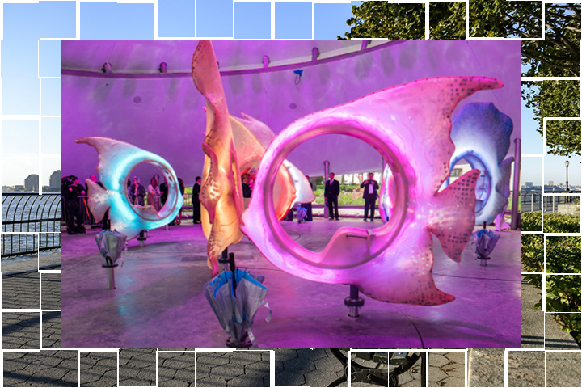
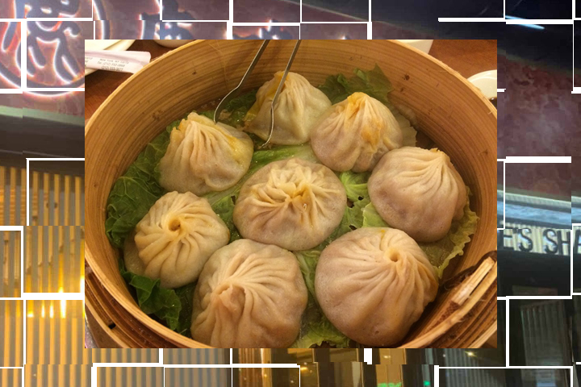
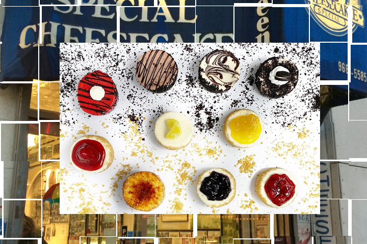
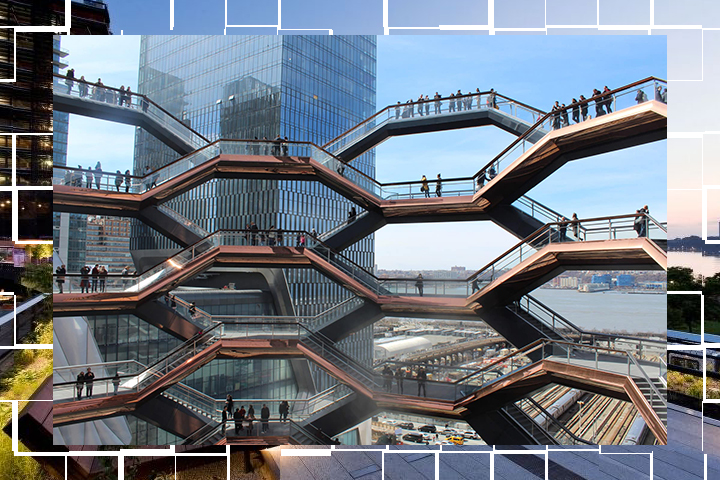
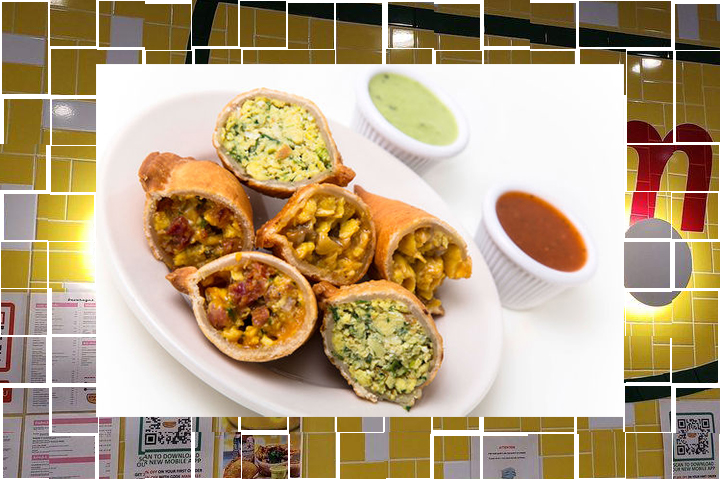

Fun with Low Funds
NYC Edition
Join me in a fun filled day in NYC that won’t break the bank! I will be taking you on my journey of free or low costing activities from lower Manhattan to midtown. You read that right! Free or low costing things do still exist in this city. As the price of almost everything in NYC sky rockets, I’d like to give you some options where you can enjoy yourself without the financial burden.
Battery Park
First stop is Battery Park located in lower Manhattan next to the Staten Island ferry. Battery park is the perfect place for sight seeing since you have a gorgeous ocean front view and are able to see the Statue of Liberty. Battery Park has so much history that you are able to observe like the East Coast Memorial honoring the servicemen who lost their lives in the Atlantic Ocean during World War II. Visiting this park is free, but you also have the option to ride the Sea Glass Carousel in the park for a low cost of $5.50. You can get to battery park by taking a ferry to pier 11, the Staten Island ferry, bus (bus: M15), or the train (trains: 1, 2, 3, 4, 5, J, N, R, W).
Joe's Shanghai
After working up an appetite we head to Joe's Shanghai located in Chinatown for their famous soup dumplings. You can walk (29min walk), bike ride (11min ride), take the bus (bus: M15, 17min ride) or train (trains: 4, 5, R, W. 20 min ride) to the restaurant. I recommend ordering their soup dumplings which are only $7.95 for 8 dumplings which is very filling and delicious. There are many other low costing items on their menu which you can view by clicking the link below.
Eileen's Special Cheesecake
Once we are done with the meal we want to grab some dessert, so we make our way to Eileen's Special cheesecake which is a short walk (11mins) from Joe's Shanghai. There you will find beautiful mini cheesecakes in many different flavors for a low cost of $5.75 each. You can explore the various flavors on their website by clicking on the link below.
Hudson Yards
We continue our journey and head over to Hudson yards where we can visit the Highline (30th Street entrance) which is a garden path you can walk along that also has an ocean front view located on the westside. You can take a short bike ride (24min ride) or train (30 mins rider, must get to 7 train) from Eileen's Special Cheesecake to Hudson Yards. The Highline is free to visit but keep in mind a reservation is needed during the weekend. You can also view the Vessel from the Highline which is an interactive sculpture towering over the Highline. If you want to go inside the Vessel there is a $10 fee for adults and chidlren are free.
Empanada Mama
Last stop after all the walking along the Highline we will go grab some food from Empanada Mama on Time Square. To get to Empanada Mama from Hudson Yards you can walk (20mins walk), bike ride (mins ride), or take the train (10 mins ride on 7 train). Empanada Mama has a large variety of empanadas to choose from and are about $4.70 each. The empanadas here are really tasty and they also have other food options you may see on their menu linked below.